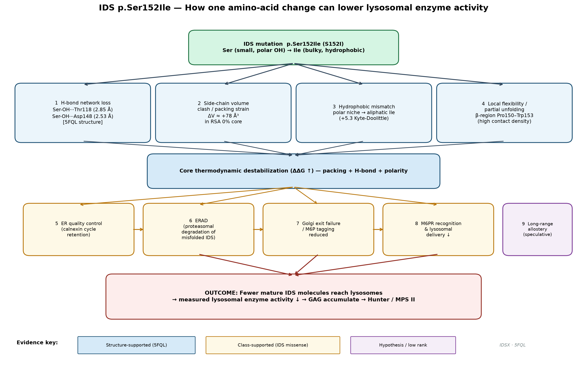
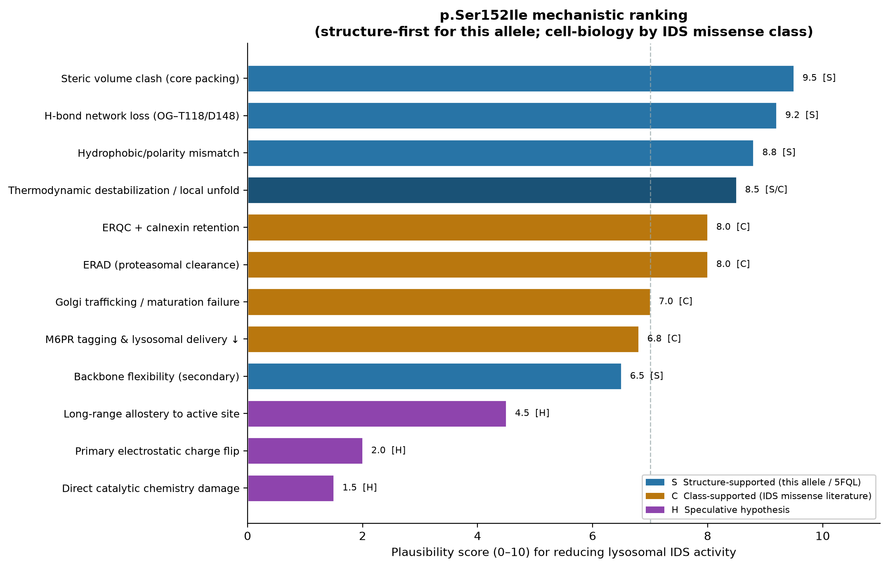
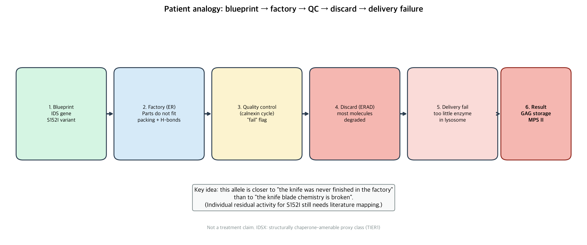

Worked example · not the whole project
구조 모듈 사례:
Ser152 네트워크
프레임을 한 코어 노드에 적용한 사례다. Ser152 / p.Ser152Ile은 “IDS 유일 열쇠”가 아니라 TIER1 구제 논리를 설명하기 좋은 대표 얼굴이다.
구조 잔기 · 비촉매
5FQL 기하
ClinVar Pathogenic
직접 결합 불가 (매장)
1. 왜 사례로 적합한가
| 기준 | 값 | 함의 |
|---|---|---|
| 촉매 거리 | ~10.3 Å | 직접 화학 파괴 스토리 약함 |
| RSA | 0% | 접힌 상태 직접 바인딩 불가 |
| 물리 | OH···Asp148 / Thr118 | H-bond 네트워크 노드 |
| S→I | 부피·소수성↑ | 패킹·극성 교란 |
| 반례 | Arg88 (2.77 Å) | 빈도≠구제적합 |
focusing의 의미: 문제 = 152 모듈 · 적용 = 연결된 표면 패치.
(Asp308·Tyr108도 형제 사례 — 2축 맵)
2. 기전 계층
1차 (5FQL): 부피 충돌 + H-bond 상실 + 극성 불일치 → 모듈 불안정.
2차 (클래스): 접힘 수율·중간체 불리 → ERQC (서열 판독 아님) → 전달↓ / ERAD 가능.
종점: 리소좀 기능 분자↓ → 측정 활성↓.
1차로 밀지 않음: 직접 촉매 파괴 · 전하 플립 · 장거리 알로스테리 단독.
AF상 backbone이 WT와 비슷해도 모순 아님: 미묘한 모듈 불안정만으로도 QC·배달이 깨질 수 있다. 네트워크를 유지하면 ER 통과에 긍정적일 수 있다 — 실측 전 가설.
시각화




3. 비전문가 한 줄
“칼날(촉매)이 부러졌다”기보다
“조립 공장에서 수율이 떨어져 폐기·미배달”에 가깝다고 읽을 구조적 이유가 있다.
개인 중증도는 임상 영역.
4. 이 페이지가 아닌 것
- 전 변이 지도 최종판 · “최중요 잔기” 증명 · 치료 프로토콜
- 152에 약을 붙인다는 설계